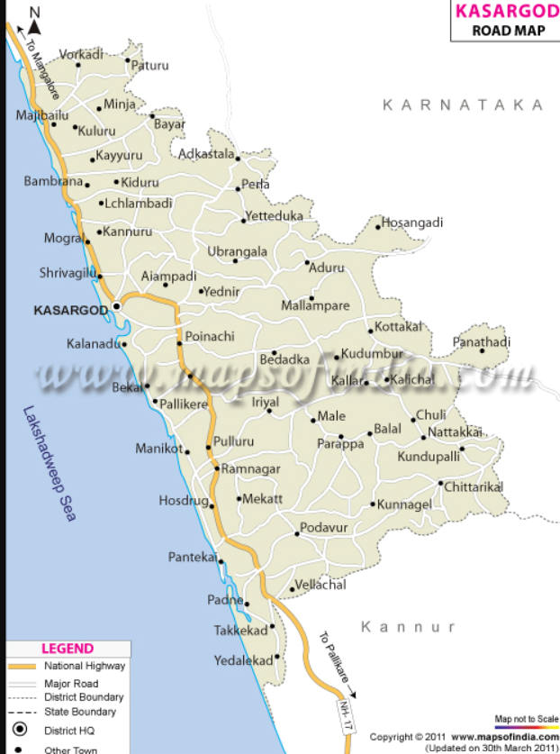

Kasaragod
Tourist Destinations
Bekal Fort
Bekal Fort is a medieval fort built by Shivappa Nayaka of Keladi in 1650 AD, at Bekal. It is the largest fort in Kerala, spreading over 40 acres. The fort appears to emerge from the sea. Almost three-quarters of its exterior is in contact with water. Bekal fort was not an administrative centre and does not include any palaces or mansions. An important feature is the water-tank, magazine and the flight of steps leading to an observation tower built by Tipu Sultan.[1] Standing at the centre of the fort, this offers views of the coastline and the towns of Kanhangad, Pallikkara, Bekal, Mavval, Kottikkulam, and Uduma. The fort's zigzag entrance and surrounding trenches reveal its defensive strategy. Holes on the outer walls are designed to defend the fort effectively from naval attacks. The upper holes meant for aiming at the farthest targets; lower holes below for striking as enemy nearer and the lowest holes to attacking enemy closest to the fort.[2]
Parapa
A paradise for nature lovers and a fine ranked in the list of tourist places in Kasaragod. It is a natural habitat of some underrated fauna like a slow turtle, the prickly porcupine, Malabar hornbill, Slender loris, and the cute wild jungle cat. If wilderness attracts you, this locale is a must visit for some great wildlife photography. Hike around the sanctuary and click around some rare species.
Thakkadipuram beach
Thaikadappuram beach at Nileshwaram in Kasaragod district is famous for the rare Olive Ridley turtles that visit here during the rainy season to lay eggs.Nileshwaram or Nileshwar or Neeleswaram is a municipality and a major town in Kasaragod District, state of Kerala, India.[1][2] It is one of the three municipalities in Kasaragod district; the others are Kasaragod and Kanhangad.[3] Nileshwar is referred to as the cultural capital of Kasaragod, the northernmost district, of Kerala.[4] "The first Chief Minister of Kerala and communist leader E. M. S. Namboodiripad had contested elections to the Assembly from the Neeleswaram segment."[4]